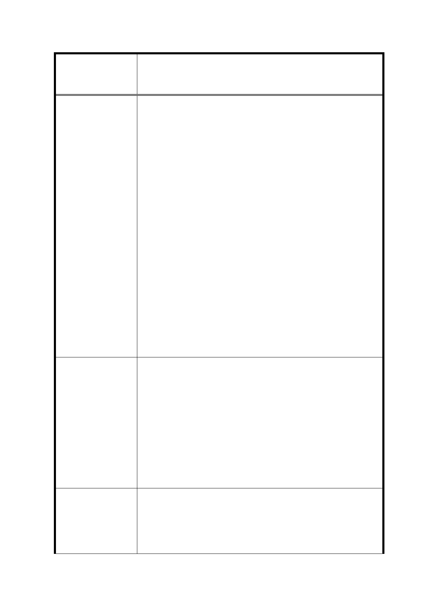

修訂臺北市信義計畫地區細部計畫（第三次通盤
案 名 檢討）案
陳情理由
建議辦法
市府回覆意見
台北市信義計畫區可說是全台灣最精華的商圈，我們台北市民
也將信義計劃區稱為台北的曼哈頓。不論是平日或假日，信義
計畫區已成為市民聚集的地點。這裡有最好的辦公大樓(例如:
台北 101 大樓)、影城、餐廳、飯店以及百貨商場(新光三越
A4~A9、貴婦百貨)。
然而在廣告招牌這個區塊，信義計畫區的廣告效益始終無法和
其他主要國際大城市商圈的廣告效益(紐約的時代廣場、東京的
銀座、香港的中環...等)相提並論。主要的原因在於台北市廣
告物管理限制過多、太過嚴格，尤其是信義計畫區內的戶外廣
告審核標準又比台北市其他各區限制更多，雖然台灣的消費力
驚人，但許多國際品牌紛紛將廣告預算編列至中國及其他國
家，信義計畫區因此喪失許多可以藉由廣告創意行銷台北市的
寶貴機會。
為能提昇台北市在國際能見度，建議只要在安全的範圍內且不
影響信義計劃區週圍居民生活的前提下，建議台北市政府應多
多參考其他國際大城市在廣告上的成功案例，了解各國際大都
市對廣告的管理方針。更應大幅放寬現有廣告法規的諸多限
制，讓台北市信義計畫區除了在一年一度的 101 跨年煙火外，
有機會能在國際上有更多的曝光度，並且將城市景觀提升到更
高的一個層次。
建議應參考紐約時代廣場及其他主要城市的優良典範，在不影
響當地居民生活品質以及兼顧安全的前提下，個人建議辦法如
下:
1. 放寬廣告物的形式: 各大樓可增設 LED 電視牆，尺寸規格、
形式應依各大樓外牆設計得有不同變化
2. 透視膜廣告不應以一處為限，得依廣告創意提出計畫。
廣告牆就是要大才能引人注目且創造話題，既然 101 可以在高
樓層設計 LED 字頻，現在信義計畫區內許多大樓都超過 30 公
尺，不應該只限制廣告物高度不得超過 30 公尺，得依廣告創意
提出計畫。
1. 考量信義計畫地區商業活動已十分蓬勃、企業總部林立，惟
現行廣告物設置規定嚴格且均須都市設計審議始得設置，爰
綜合分區及廣告物特性、商業活動需求及都市景觀等面向重
新研訂本地區廣告物規定。
2. 除部分區位得設置閃爍式電子展示廣告外，亦增訂廣告物高
34